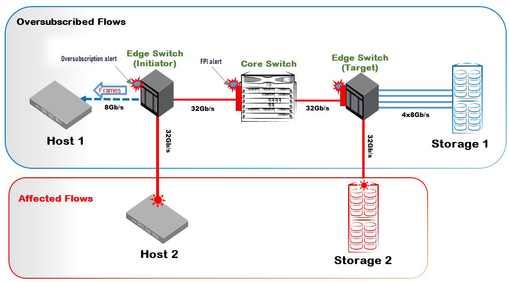
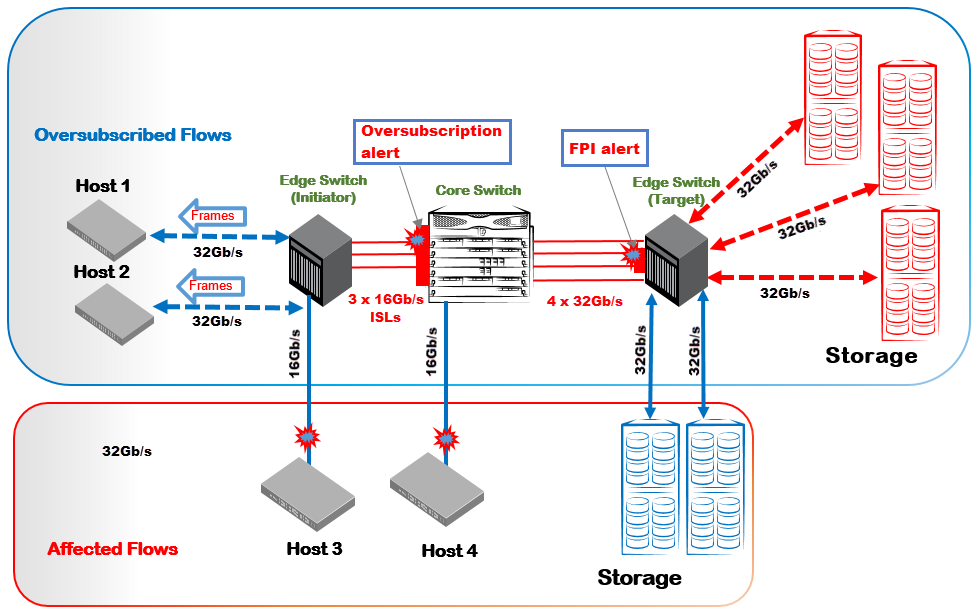

An improperly designed SAN fabric where the design considerations do not match the actual link throughput can cause oversubscription issues. Whenever the fabric has insufficient link capacity and the link is no longer capable of transmitting more frames, the resulting oversubscription can cause congestion-related issues, for example, quality of service (QoS) and I/O failures.
The following illustration describes the congestion from the read oversubscription that is caused by a link speed mismatch between a 32G storage device sending to a 8G host.

In the preceding diagram, Host 1 is connected to the fabric through an 8G HBA, and Host 1 requests a large read I/O from Storage 1. Similarly, Host 2 with a 32G HBA demands a large read I/O from Storage 2. Both Storage 1 and Storage 2 are 32G storage devices. The traffic flow from Storage 1 overwhelms the slower 8G link from the edge initiator switch to Host 1 and results in oversubscription. The edge initiator switch slows down the incoming traffic from the core switch, and this creates the traffic performance due to congestion. It creates the IO_PERF_IMPACT condition on the link that connects these two switches. Subsequently, the backpressure on the core switch is propagated to the E_Port of the target edge switch.
Edge Host Switch Alert Examples
The following example shows the RASLog alert that is received for the F_Port 7/35 on the initiator edge switch (Host) to indicate the oversubscription condition.
2024/09/06-06:58:00:747206, [MAPS-3038], 5671/3133, SLOT 1 | FID 1 | PORT 7/35, WARNING, Intiator_Edge_SW, slot7 port35, F-Port 7/35, Condition=ALL_PORTS(PORT_BANDWIDTH==OVERSUBSCRIBED), Current Value:[PORT_BANDWIDTH, OVERSUBSCRIBED, (TXQL=464 us, TX=96.5%) ], RuleName=defALL_PORTS_OVERSUBSCRIBED, Dashboard Category=Fabric Performance Impact, Quiet Time=15 min.The following example shows the oversubscription condition on the host port that is displayed on the corresponding MAPS dashboard output.
Fabric Performance Impact|1 |defALL_PORTS_OVERSUBSCRIBED|09/06/24 06:58:00|F-Port 7/35 |OVERSUBSCRIBED |
(7) | | | | |
The following example shows the oversubscription condition that is displayed on the corresponding MAPS congestion dashboard output.
Congestion DB:
3 Oversubscription State Frequency Table:
========================================
Port |Current Minute State |Frequency|
-----------------------------------------------
F-Port 7/35 |Oversubscribed |5 |
Core Switch Alert Examples
The following example shows the MAPS RASLog alert that is received for E_Port 9/19 on the core switch that indicates the traffic performance due to congestion, that is, the IO_PERF_IMPACT condition.
2024/09/06-13:00:00, [MAPS-2070], 2692, SLOT 1 | FID 1 | PORT 9/19, WARNING, Core_Switch, slot9 port19, E-Port 9/19, Condition=ALL_PORTS(DEV_LATENCY_IMPACT==IO_PERF_IMPACT), Current Value:[DEV_LATENCY_IMPACT, IO_PERF_IMPACT, (53.1% of 5 secs in VC: 9) ], RuleName=defALL_PORTS_IO_PERF_IMPACT, Dashboard Category=Fabric Performance Impact, Quiet Time=15 min.The following example shows the IO_PERF_IMPACT condition that is displayed in the corresponding MAPS dashboard output for the core switch.
Fabric Performance Impact|1 |defALL_PORTS_IO_PERF_IMPACT|09/06/24 13:00:00|E-Port 9/19 |IO_PERF_IMPACT |
(1) | | | | |
The following example shows the credit-stall condition that is displayed on the corresponding MAPS congestion dashboard output of the core switch.
2 Credit-Stall State Frequency Table:
====================================
Port |Current Minute State |Frame Loss |Perf Impact |Medium |Low |Info |
---------------------------------------------------------------------------------------------
E-Port 9/19 |Perf Impact |0 |2 |0 |0
Edge Target Switch Alert Examples
The following example shows the MAPS RASLog alert that is received for the E_Port 43 on the IO_PERF_IMPACT condition. As a result, backpressure has been propagated to the E_Port of the target edge switch.
2024/09/06-19:00:01:284580, [MAPS-1003], 275/114, FID 128 | PORT 0/43, WARNING, Target_Edge_SW, port43, E-Port 43, Condition=ALL_PORTS(DEV_LATENCY_IMPACT==IO_PERF_IMPACT), Current Value:[DEV_LATENCY_IMPACT, IO_PERF_IMPACT, (57.0% of 10 secs in VC: 9) ], RuleName=defALL_PORTS_IO_PERF_IMPACT, Dashboard Category=Fabric Performance Impact, Quiet Time=15 min.The following example shows the IO_PERF_IMPACT condition that is displayed in the corresponding MAPS dashboard output for the target edge switch.
Fabric Performance Impact|1 |defALL_PORTS_IO_PERF_IMPACT|09/06/24 19:00:01|E-Port 43 |IO_PERF_IMPACT |
(1) | | | | | |
The following example shows the credit-stall condition that is displayed on the corresponding MAPS congestion dashboard output of the target edge switch.
2 Credit-Stall State Frequency Table:
====================================
Port |Current Minute State |Frame Loss |Perf Impact |Medium |Low |Info |
---------------------------------------------------------------------------------------------
E-Port 43 |Perf Impact |0 |1 |0 |0 |0 |
The following example shows the RASLog alert when the oversubscription state is cleared for the F_Port 7/35 of the host.
2024/09/06-07:17:00:769621, [MAPS-3039], 5689/3151, SLOT 1 | FID 1 | PORT 7/35, INFO, Intiator_Edge_SW, slot7 port35, F-Port 7/35, Condition=ALL_PORTS(PORT_BANDWIDTH==OVERSUBSCRIPTION_CLEAR), Current Value:[PORT_BANDWIDTH, OVERSUBSCRIPTION_CLEAR], RuleName=defALL_PORTS_OVERSUBSCRIPTION_CLEAR, Dashboard Category=Fabric Performance Impact, Quiet Time=15 min.The following example shows the corresponding MAPS dashboard output when the oversubscription state is cleared on the host.
Fabric Performance Impact|1 |defALL_PORTS_OVERSUBSCRIPTI|09/06/24 07:17:00|F-Port 7/35 |OVERSUBSCRIPTION_CLEAR|(56) | |ON_CLEAR | | |The following example shows the RASLog alert for the E_Port 9/19 when the credit-stall condition is cleared on the core switch.
2024/09/06-13:21:00, [MAPS-2071], 2708, SLOT 1 | FID 1 | PORT 9/19, INFO, Core_Switch, slot9 port19, E-Port 9/19, Condition=ALL_PORTS(DEV_LATENCY_IMPACT==IO_LATENCY_CLEAR), Current Value:[DEV_LATENCY_IMPACT, IO_LATENCY_CLEAR, (Duration: 10s)], RuleName=defALL_PORTS_IO_LATENCY_CLEAR, Dashboard Category=Fabric Performance Impact, Quiet Time=15 min.The following example shows the corresponding MAPS dashboard output when the credit-stall condition is cleared on the core switch.
Fabric Performance Impact|1 |defALL_PORTS_IO_LATENCY_CLE|09/06/24 13:21:00|E-Port 9/19 |IO_LATENCY_CLEAR |(2) | |AR The following example shows the RASLog alert for the E_Port 43 when the credit-stall condition is cleared on the target edge switch.
2024/09/06-19:11:01:271770, [MAPS-1004], 279/118, FID 128 | PORT 0/43, INFO, Target_Edge_SW, port43, E-Port 43, Condition=ALL_PORTS(DEV_LATENCY_IMPACT==IO_LATENCY_CLEAR), Current Value:[DEV_LATENCY_IMPACT, IO_LATENCY_CLEAR, (Duration: 10s)], RuleName=defALL_PORTS_IO_LATENCY_CLEAR, Dashboard Category=Fabric Performance Impact, Quiet Time=15 min. The following example shows the corresponding MAPS dashboard output when the credit-stall condition is cleared on the target edge switch.
Fabric Performance Impact|1 |defALL_PORTS_IO_LATENCY_CLE|09/06/24 19:11:01|E-Port 43 |IO_LATENCY_CLEAR |(2) |AR 
In the previous example, the 16G link speed between the edge the initiator switch and the core switch is less than the link speed between the core switch and the edge target switch, which is 32G. When the edge target switch is transmitting frames at the link speed of 32G, and the read I/O traffic of the initiator side core switch is only16G, the result is the accumulation of frames to the edge target switch. This accumulation results in the oversubscription on the initiator side core switch, which is E_Port. The oversubscription creates backpressure to the edge target switch, because the downstream links have the lower bandwidth. The Host-to-edge initiator switch needs more time to transmit the frames. When the initiator side core switch makes more read I/O requests to multiple targets simultaneously, the oversubscription condition exists.
Core Switch Alert Examples
The following example shows the RASLog alert that is received for the E_Port 11/40 on the core switch. This alert indicates that the oversubscription condition that occurred due to a bottleneck in the ISL between the core switch and the edge initiator switch.
2024/09/07-11:35:01:000640, [MAPS-3038], 5189/3863, SLOT 1 | FID 1 | PORT 11/40, WARNING, Core_Switch, slot11 port40, E-Port 11/40, Condition=ALL_PORTS(PORT_BANDWIDTH==OVERSUBSCRIBED), Current Value:[PORT_BANDWIDTH, OVERSUBSCRIBED, (TXQL=389 us, TX=100.0%) ], RuleName=defALL_PORTS_OVERSUBSCRIBED, Dashboard Category=Fabric Performance Impact, Quiet Time=15 min.The following example shows the oversubscription condition that is displayed on the corresponding MAPS dashboard output of the core switch.
Fabric Performance Impact|1 |defALL_PORTS_OVERSUBSCRIBED|09/07/24 11:35:00|E-Port 11/40 |OVERSUBSCRIBED |
(3) | | | | |
The following example shows the oversubscription condition that is displayed on the corresponding MAPS congestioniodashboard output of the core switch.
3 Oversubscription State Frequency Table:
========================================
Port |Current Minute State |Frequency|
-----------------------------------------------
E-Port 11/40|Oversubscribed |2 |
Target Edge Switch Alert Examples
The following example shows the RASLog alert that is received for the E_Port 3/49. This alert indicates that the traffic performance due to congestion which is an IO_PERF_IMPACT condition.
2024/09/07-05:41:00:735675, [MAPS-2070], 6880/4300, SLOT 1 | FID 1 | PORT 3/49, WARNING, Target_Edge_SW, slot3 port49, E-Port 3/49, Condition=ALL_PORTS(DEV_LATENCY_IMPACT==IO_PERF_IMPACT), Current Value:[DEV_LATENCY_IMPACT, IO_PERF_IMPACT, (72.4% of 1 secs in VC: 3) ], RuleName=defALL_PORTS_IO_PERF_IMPACT, Dashboard Category=Fabric Performance Impact, Quiet Time=15 min.The following example shows the oversubscription condition that is displayed on the corresponding MAPS dashboard output of the target edge switch.
Fabric Performance Impact|1 | defALL_PORTS_IO_PERF_IMPACT|09/07/24 05:37:00|E-Port 3/49 | IO_PERF_IMPACT |The following example shows the oversubscription condition that is displayed on the corresponding MAPS congestion dashboard output of the target edge switch.
2 Credit-Stall State Frequency Table:
====================================
Port |Current Minute State |Frame Loss |Perf Impact |Medium |Low |Info |
---------------------------------------------------------------------------------------------
E-Port 3/49 |Medium St |0 |2 |10 |1 |0 |